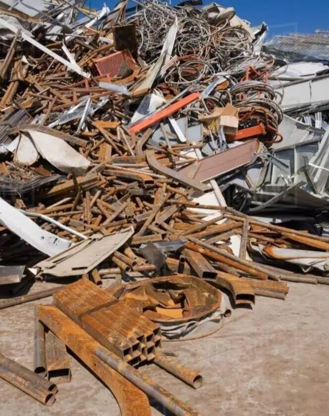

Recycled Building Material Scrap & Demolition Aggregate
Product Code: P034
RS CONSTRUCTIONS offers eco-friendly and economical Building Material Scrap (Recycled Demolition Aggregates). Derived from crushed concrete structures, masonry debris, and stone rubble, our processed scrap is an ideal cost-reducing material for low-lying ground leveling, plot backfilling, temporary site access roads, and foundation compaction.
Technical Specifications & Properties
- Gradation Standard: MoRTH Section 400 (Grading I / Grading II / Grading III)
- California Bearing Ratio (CBR): Minimum 30% at 98% MDD compaction
- Liquid Limit (LL): < 25%
- Plasticity Index (PI): < 6% (Low clay content to avoid instability)
- Aggregate Impact Value (AIV): Maximum 40%
- Supply Unit: Per Brass (100 cu.ft), Cubic Meter, or Tipper Truck loads
- Tax Rate: 5% GST (Applicable)
Recommended Applications
1. Plot Leveling & Structural Backfilling
Highly economical for raising low-lying land plots, backfilling foundation trenches, and preparing stable subgrade surfaces prior to flooring.
2. Temporary Haul Roads & Construction Platforms
Provides a solid, non-muddy traction bed for heavy trucks and crane machinery on active construction sites during wet seasons.
Get a Wholesale Price Quote
Contact our sales team today for bulk truckload pricing, availability, and site delivery schedules.
Request Scrap Quote